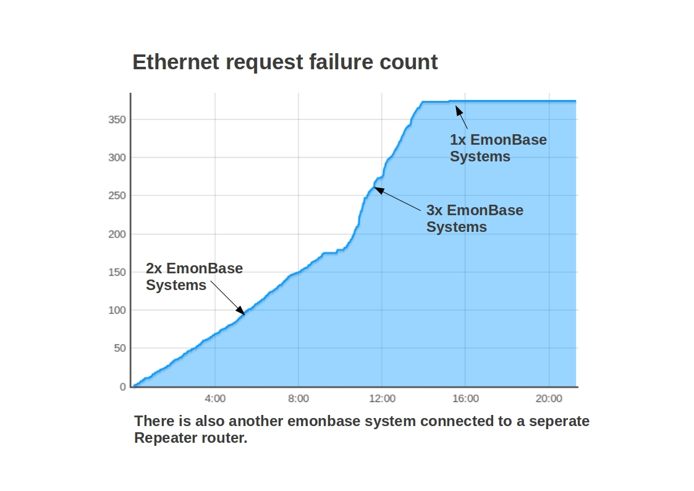

Hi there
I've managed to post data to both emonCMS and Pachube using the sample sketches on github. However the Nanode RF always stops sending data over the ethernet after some time in both emonCMS and Pachube. Sometimes it takes 10 minutes, sometimes 1 hour but eventually it always stops. Although it keeps receiving the RF data from emonTX (I can see the serial log) it stops posting the data via ethernet and doesn't connect again until I manually reset it.
The watchdog is disabled (I'm not using UNO optiloader) but even if I leave the 10s delay the Nanode doesn't do the auto-reset.
Is anyone experiencing similar problem? Any tips to get it solved?
Thanks
Igor
Re: EmonBase / Nanode RF stops posting data via Ethernet
Hi Igor,
Just to help with trouble shooting, please post up the actual emonBase sketches you are using to send data to emoncms and Pachube. Remember to xxxxx out the API keys!
Re: EmonBase / Nanode RF stops posting data via Ethernet
Just an idea but did you place an extra capacitor between Vcc and ground? (step25B on http://ichilton.github.com/nanode/rf/build_guide.html)
Re: EmonBase / Nanode RF stops posting data via Ethernet
Hi Guys,
I have exactly the same trouble mentioned by Igor, Followed the instructions supplied from Glyn disabled the Watch Dog, it seem that this helped that the board now don´t get freezed. But the comunication btween the Nanode and servers is broken, still get the orange led on ethernet plug blinking. Maybe a power adapter Issue????
I have runing the board for 48h succesefully until this afternoon.
Thanks.
Re: EmonBase / Nanode RF stops posting data via Ethernet
Power adapter issue is a good point. We had some un-stability issues when using some cheap and nasty power adapters. After getting some better quality units we havent had as many problems. We did a blog post about the testing of different USB adapters: http://openenergymonitor.blogspot.com/2011/08/not-all-usb-power-supplies-are-created.html. How are you guys powering your Nanode's?
We are having issues with Nanode RF's dropping offline and requiring a reset once ever 2-3 months, hopfully the watchdog will improve this.
Re: EmonBase / Nanode RF stops posting data via Ethernet
Thanks for your feedback guys!
@stinor - yeah, I do have the extra capacitor fitted on my nanode... :(
@xotet - I have disabled the watchdog, but after the 10-second delay it doesn't reset but simply stops posting data
@glyn.hudson - the nanode was powered by the ftdi cable and the emonTx by the usb adapter. just swapped them now to see what happens (so far, 5 mins and still posting!)
I keep you posted. If the issue is the power adapter it will be a pretty straightforward fix!
Thanks
Igor
Re: EmonBase / Nanode RF stops posting data via Ethernet
Having the same problem. After 30-45 min it stops posting, and when i check with serial it just stops in the middle of the loop.
1 emontx: 42 46 | time: 10430
2 {rf_fail:0,power1:42,power2:46,temperature:23.81}
Re: EmonBase / Nanode RF stops posting data via Ethernet
i have same problem. i have disabled the watchdog.
my is nanode v5 and it counts to 10 rf recived in serial monitor and after that the red led turns off and the nanode lose connections to network.
can not ping it. reset button dont work and the only way is to reset by turing off power.
tested with usb power adapter , power from usb port pc and power by ftdi cable.
if i put back sketch from old nanode and not use the ethercard lib sketch it all works ok.
Re: EmonBase / Nanode RF stops posting data via Ethernet
Larsjo, thanks for the serial output, stage 3 is the ethernet callback, which means that its failing to get a reply from the server or if its freezing maybe this indicates that there was an issue in processing the reply. Does the nanode hang at that point for good or are you still getting emontx packets?
Igordutra, with the watchdog disabled, the nanode will not reset after 10s but should just carry on in whatever state it was in when the delay was called.
As Glyn said, we have also had issues with the nanode's dropping offline, but with the timescales involved its so hard to debug so any debugging help is greatly appreciated.
Re: EmonBase / Nanode RF stops posting data via Ethernet
Thanks for the comments.
Power via USB adapter didn't work for me either.
I'll try the old sketch using ethershield lib to see whether it works and during the weekend I'll try the nanode with the UNO optiloader. This is a very frustrating (and time consuming) issue...
Cheers
Igor
-----
UPDATE:
Just tried to run the old ethershield sketch but there are many compiling errors both in Arduino 1 and 023. Probably a conflict with the libs... (time consuming as I said...)
Re: EmonBase / Nanode RF stops posting data via Ethernet
Still getting the info from my emontx, the emonGLCD is showing the power.
Also the time is also right on the display.
Sometime i can reset with the button, but not everytime (have to use hard reset)
Re: EmonBase / Nanode RF stops posting data via Ethernet
For info, Of the systems I have running here with the latest sketch. I have one system running for 12 days (since a sketch update) and another that has been running for 10 days at which point it did crash and I had to reset.
Another thing to check is that your ethercard library is the latest version as it is getting updated quite frequently at the moment.
Re: EmonBase / Nanode RF stops posting data via Ethernet
Just reading the thread on the jeelabs forums, could be useful: http://forum.jeelabs.net/node/735
Re: EmonBase / Nanode RF stops posting data via Ethernet
Just updatet to the latest ver. libs, to see if that will do the job.
If not, i will try to slow the ethernet part a bit.
NO GO, even with the slow settings.. :-( can't even use the reset button.
Re: EmonBase / Nanode RF stops posting data via Ethernet
I realise I have not asked, What bootloader are you using? is it Dumalinove? have you got #define UNO uncommented?
Re: EmonBase / Nanode RF stops posting data via Ethernet
yes it is, and i have #define UNO uncomment.
Re: EmonBase / Nanode RF stops posting data via Ethernet
I have a Duemilanove and #define UNO commented...
Regarding jcw libs, I downloaded earlier the latest versions of jeelib and ethercard and still the same.
Now I'm trying what jcw suggested here:
http://forum.jeelabs.net/comment/4933#comment-4933
and it's been 20 minutes without freezing...
Re: EmonBase / Nanode RF stops posting data via Ethernet
So did I, but after 45 min it stuck
Re: EmonBase / Nanode RF stops posting data via Ethernet
Damn.. same here after 30 mins.
I think I have an UNO bootloader in one of my drawers. Will give it a try.
Re: EmonBase / Nanode RF stops posting data via Ethernet
igordutra, it will be great to hear if the UNO bootloader makes any difference. I've created another sketch, minus all references to watchdog and all serial prints, might be worth a try too: https://github.com/openenergymonitor/NanodeRF/tree/master/NanodeRF_dev
Re: EmonBase / Nanode RF stops posting data via Ethernet
Hi Trystan / Larsjo
The UNO bootloader has made a difference indeed! Although it still stops posting data (see screengrab attached) the watchdog kicks in resetting the Nanode and it starts posting again.
That's probably not ideal in long term but at least it does work :)
I'll try to record everytime the watchdog kicks in to see how often that happens (1st time was less than 10 minutes).
Igor
Re: EmonBase / Nanode RF stops posting data via Ethernet
Great to hear Igor!
Re: EmonBase / Nanode RF stops posting data via Ethernet
Hi Trystan
Didn't work in the end... :( It stopped posting after about 1 hour yesterday. Then it frozen and the green LED stayed on. Now I tried to reset and the serial monitor only displays [webClient] and the green LED stays on... I've uploaded the sketch again but the same happens (freezes on webClient and green LED turned on).
I'll try the other test sketch you did yesterday but I'm starting to consider the possibility of a hardware fault on my Nanode...
Thanks
Igor
----
UPDATE: ops, just reconnected all ICs and it went back to normal again.
Re: EmonBase / Nanode RF stops posting data via Ethernet
Hi Igor,
I think to move forward on this we need to have a look at the Nanode.
Like a said before we are having problems with NanodeRF's dropping off but after several months not days/hours. There is definitely something not right.
I have sent you an email.
Re: EmonBase / Nanode RF stops posting data via Ethernet
Hello Igor, thought I would also try to record watchdog resets and request failure count and have some interesting data. I get a large colleration of ethernet equest failure rate and the number of emonbase's connected to one router. With one emonbase though it pretty much flatlines with no request failures. One of the systems reported no watchdog induced resets and another reported two resets at around 3:30am and 5am.

Re: EmonBase / Nanode RF stops posting data via Ethernet
I reckon there must be something wrong with my Nanode, solder joints, faulty IC, etc... Sometimes it simply freezes, sometimes it keeps receiving RF packets, sometimes I reconnect the ICs and it goes back to normal (for a while...) and the watchdog reset doesn't always work as well. That's very strange because I'm using the same sketches (and hardware) you guys are using without any major issues for some time.
I ordered another Nanode kit to compare the results with this one. And thanks Glyn, I really appreciate your help on fixing my Nanode :)
Igor
Re: EmonBase / Nanode RF stops posting data via Ethernet
I will check this out.
And post to vis.openenergymonitor.org demo site.
Running all night, with the test code, and still running...
Maybe its my domain provieder i have to talk to.
Re: EmonBase / Nanode RF stops posting data via Ethernet
Running for a week now, posting to local emoncms, without issue. I am running a sketch based on the NanodeRF_singleCT_rtc sketch, without the UNO. I just modified it to use the MAC address of the 11AA02E48, post atmospheric pressure from a locally attached BMP085 sensor, and weather data from remote sensors. Didn't notice any glitch, posting every 10 mins.
Re: EmonBase / Nanode RF stops posting data via Ethernet
A couple updates...
Running UNO bootloader has fixed the board reset/watchdog issues (I'm using the pachube sketch). However since there's no callback function in the sketch it was always freezing after a while. So I did a (very ugly) workaround resetting the Nanode every 100 cycles. It's been working since Friday and running much more stable than before but I still had to reset it manually twice over the weekend.
There are a few things I'd want to try such as reducing the frequecy emonTX sends data (currently every couple seconds) and a callback function that works with pachube.
I've also managed to build a new Nanode RF but it has the same issues I had running duemilanove bootloader (the nanode doesn't reset and stops posting data via ethernet). So I'm starting to discard a specific hardware problem with my original Nanode...
Igor
Re: EmonBase / Nanode RF stops posting data via Ethernet
I recompiled the sketch with the last ver of ethercard lib, with duemilanove bootloader, running for 3 days successefully.
Re: EmonBase / Nanode RF stops posting data via Ethernet
@xotet how often do you send RF data from emonTX to Nanode? Is it a single CT only? Are you posting to emonCMS or pachube?
I believe it should work with the duemilanove bootloader, most people probably use it without any major problems.
Re: EmonBase / Nanode RF stops posting data via Ethernet
with this code everything is working, been running all night, and day with out problems.
_________________________________________________________________________________
I've created another sketch, minus all references to watchdog and all serial prints, might be worth a try too: https://github.com/openenergymonitor/NanodeRF/tree/master/NanodeRF_dev
________________________________________________________________________________
Just did a few changes to the var. I post on my page.
http://juelsminde.org/solceller
Its a test page, so maybe it will be down ...
Re: EmonBase / Nanode RF stops posting data via Ethernet
Thanks Larsjo
That's the only sketch I haven't tried yet and Trystan suggested it a few days ago - shame on me... Time is running out tonight but will try this sketch tomorrow.
BTW I'm testing another Nanode RF with the same sketch (and UNO bootloader) and it's behaving exatly the same as the other Nanode: resets and freezes sometimes but at leasts it keeps posting data to pachube.
Igor
Re: EmonBase / Nanode RF stops posting data via Ethernet
There have been many discussions lately regarding emonBase Nanode/NanodeRF instability.
To constructively try and move forward, lets create a knowledge base of setups that are stable Vs. setups which are not. Hopefully this will help us to debug this issue and give us a framework in which to discuss problems.
See forum thread: http://openenergymonitor.org/emon/emonbase/stability
Re: EmonBase / Nanode RF stops posting data via Ethernet
Hello,
I would like to attach one BMP085 to my nanodRF or (even better) a remote sensor.
Can you please share some thoughts, your approach or some kind of documentation about BMP085?
Thnaks for any halp.
Regards,
Luis
Re: EmonBase / Nanode RF stops posting data via Ethernet
Olá Luis!
My suggestion would be to buy a jeenode and a pressure plug (http://jeelabs.com/products/pressure-plug) and use EmonTx firmware to send the RF data to the NanodeRF. The BMP085 is included in jeelib library so it should be pretty straightforward.
I've done it myself using the Room Board and also did some custom jeenode plugs including DHT-11, DHT-22 and anemometer using EmonTX firmware. You can see it working here: https://pachube.com/feeds/44342
We should probably create a new post for this topic!
Cheers
Igor
Re: EmonBase / Nanode RF stops posting data via Ethernet
Hi Luis,
I use the BMP085 on the NanodeRF, using the adafruit library.
I include my code posting to pachube and emoncms. It sends temperature, humidity, luminosity and battery level from a remote Microchip PIC based "emonTX", with temperature and pressure from BMP085 on the nanodeRF.
The BMP085 sensor is from Sparkfun.
Having the pressure sensor local or rermote made no difference for me. The atmospheric pressure is the same outside than it is inside.
Make sure you put your pachube and/or emoncms apikey, and that you configure the network band and network id properly.
The node ID of my emonTX is 0x11, and might be different to yours.
Cheers
Francois
Re: EmonBase / Nanode RF stops posting data via Ethernet
Olá Igor! Bonjour Francois!
Thank you very much to both for answering me!
@Igor, I already bought some parts from Jeelabs (BMP085, RFM12b and some connectors). I also have a DHT22 for humidity readings.
@Francois, thanks for sharing your code, I'll definitely use it as a baseline for my emoncms ant pachube testings
My nanodeRF is already built and I think it's working correctly.
For remote readings I think that the TempTX from fellow Nathan Chantrell which I think is cheaper, has an easy/simple design and very low power consumption which is great to "put outside". From Nathan words it is completely possible to attach more sensors to its module, I just don't know how to do it (at least for now).
When I first started to think about this, that TempTX was Nathan's latest release. A few days ago, I saw that Nathan already improved it's design building an "ATiny" version which is discribed here.
From my searches, a weather station is fairly common project that many people would like/want to have/build. I think it would be awesome to have a remote modular (multi sensor) module that each one could build at it's own pace or needs and over the time adding other modules to the solution. (starting with temperature and than adding an hygrometer, barometer, anemometer, etc.
Considering this, if someone can give me some pointers to basic information on how to add/connect sensors to a "remote" node based on RFM12b nanodeRF (which pins to use, good practices, bad practices, etc) I would be greatly appreciated.
Regards,
Luís
Re: EmonBase / Nanode RF stops posting data via Ethernet
Hi Luis
Great tip about the ATtiny TempTX! As long as we manage to fit the code in less than 8kb that would be awesome - of course I'd like to test it with my other sensors! I'll give it a try, it costs less than a couple beers :)
(and now this post has nothing to do with the Nanode RF)
Cheers
Igor